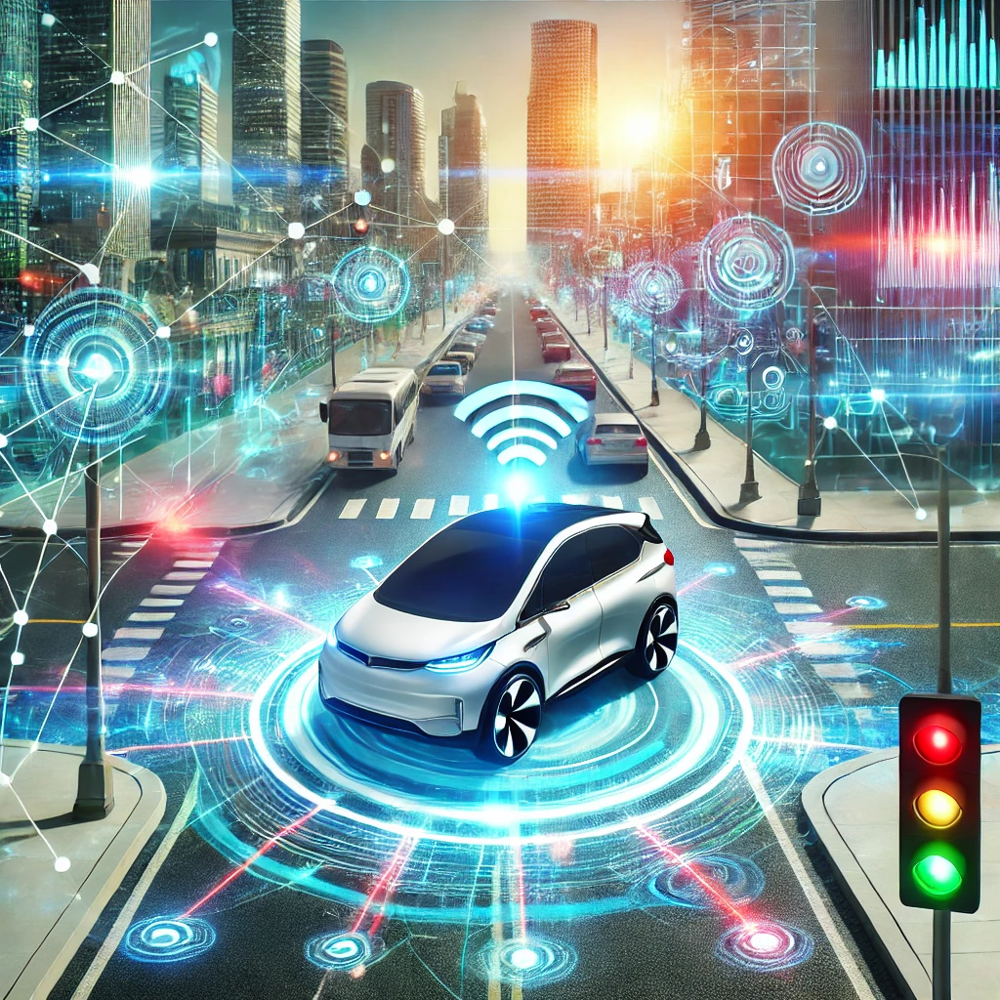

Wykorzystanie Sztucznej Inteligencji w Ruchu Lądowym
Sztuczna inteligencja (SI) staje się kluczowym elementem transformacji w dziedzinie transportu lądowego, wprowadzając innowacje, które rewolucjonizują sposób, w jaki podróżujemy i zarządzamy ruchem drogowym.
- Autonomiczne pojazdy: SI jest podstawą działania samochodów autonomicznych, które wykorzystują zaawansowane algorytmy do analizy otoczenia w czasie rzeczywistym. Dzięki technologii rozpoznawania obrazów, radarom i czujnikom, samochody te mogą poruszać się bez udziału kierowcy, zwiększając bezpieczeństwo na drogach i redukując liczbę wypadków spowodowanych błędami ludzkimi.
- Zarządzanie ruchem drogowym: Inteligentne systemy zarządzania ruchem analizują dane z kamer, czujników i urządzeń GPS, aby dynamicznie dostosowywać sygnalizację świetlną i kierować ruchem w sposób, który minimalizuje korki i poprawia płynność ruchu.
- Transport publiczny: SI optymalizuje rozkłady jazdy, przewiduje opóźnienia i dostosowuje trasy w czasie rzeczywistym, zapewniając bardziej efektywne usługi dla pasażerów.
- Monitorowanie i predykcja: Algorytmy SI analizują dane historyczne i bieżące, aby przewidywać wzmożony ruch i proponować alternatywne trasy, co pomaga użytkownikom zaoszczędzić czas i zmniejsza emisję spalin.
Wprowadzenie SI w ruchu lądowym to nie tylko wyraz technologicznego postępu, ale także istotny krok w kierunku zrównoważonego i inteligentnego transportu, który odpowiada na potrzeby współczesnych społeczeństw.
